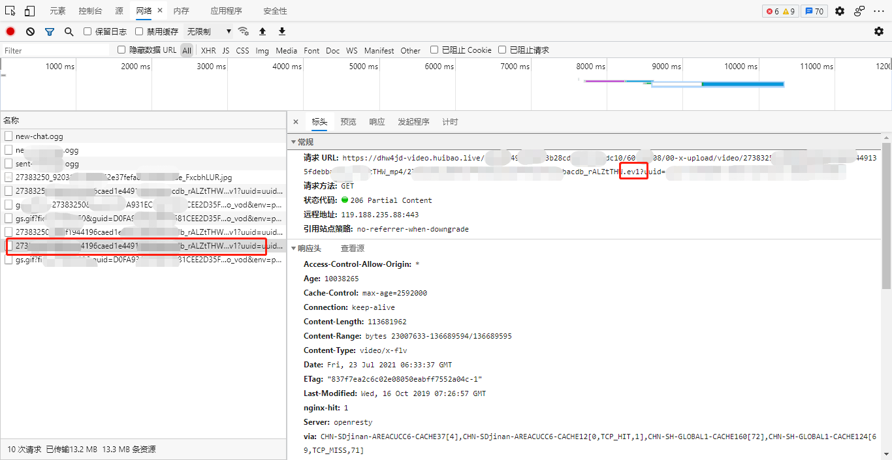
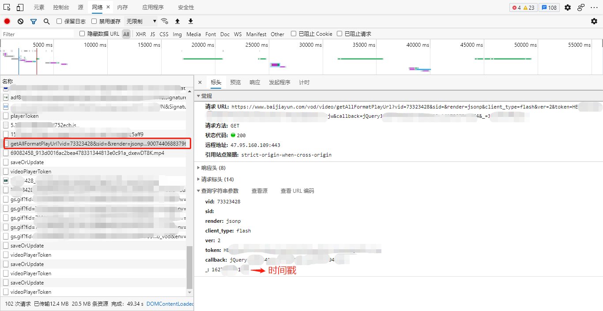
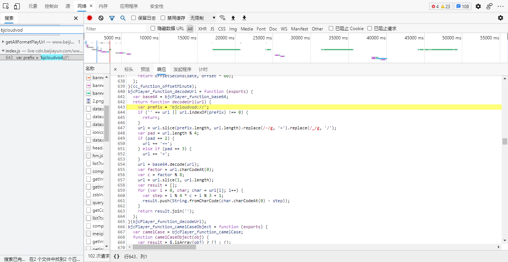
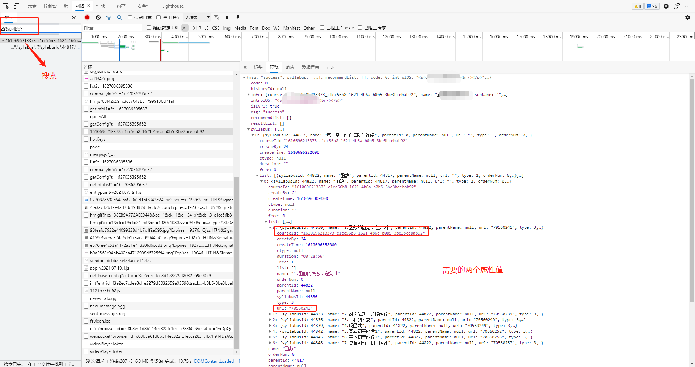
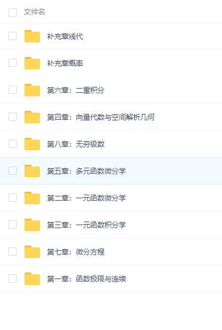

# 0x1 F12 寻找关键点
在播放视频视频的过程过，按 F12 查看网络发送的请求，立刻发现了一个关键的地址

直接浏览器中打开这个地址会下载一个 .ev1 的文件，没见过这中文件格式的小刘同学，决定百度搜索一下这是个啥格式：
EV1 文件是一种加密文件。下载文件查看器查看文件。
既然需要解密播放工具，那就先在论坛搜搜看。于是机智的刘同学发现了论坛上有这样一个有用的帖子：ev1 百家云视频解密工具、ev1 视频提取工具，支持 Windows、MacOS、Linux
通过使用该工具解密，转为 flv 格式，最终视频成功播放。
这样的话所有的视频只要在播放的时候获取到这个链接复制到浏览器下载最后提取就可以了。
# 0x2 通过 API 获取视频地址

请求URL：https://www.xxxjiayun.com/vod/video/getAllFormatPlayUrl
请求方法：GET
参数：
vid: 73323428 // 这里的vid其实是视频的url属性
sid:
render: jsonp
client_type: flash
ver: 2
token: xxxxxxxx-xxxxxx-xxxxxx// 修饰后 播放器token
callback: jQueryxxxxxxxxxxxx_162xxxxx// 修饰后 感觉这个参数没啥用
_: 16270000005// 修饰后 时间戳
返回的数据 (非完整)：
jQuery193_1164({ | |
"code": 0, | |
"data": { | |
"duration": "2055", | |
"format": null, | |
"definition": [{ | |
"type": "superHD", | |
"name": "超清" | |
}], | |
"vod_default_definition": "superHD", | |
"playback_default_definition": "superHD", | |
"all_format_play_info": { | |
"ev1": { | |
"superHD": { | |
"definition": "超清", | |
"size": 70459130, | |
"cdn_list": [{ | |
"cdn": "hw4jd", | |
"definition": "high", | |
"duration": 2055, | |
"height": 540, | |
"oversea": 0, | |
"size": 70459130, | |
"url": "", | |
"width": 960, | |
"weight": 9, | |
"enc_url": "bjcloudvod://xxx-xxx" | |
}, { | |
"cdn": "jd4jd", | |
"definition": "high", | |
"duration": 2055, | |
"height": 540, | |
"oversea": 0, | |
"size": 70459130, | |
"url": "", | |
"width": 960, | |
"weight": 7, | |
"enc_url": "bjcloudvod://xxx-xxx" | |
}, { | |
"cdn": "al4jd", | |
"definition": "high", | |
"duration": 2055, | |
"height": 540, | |
"oversea": 0, | |
"size": 70459130, | |
"url": "", | |
"width": 960, | |
"weight": 6, | |
"enc_url": "bjcloudvod://xxx-xxx" | |
}] | |
} | |
}, | |
"mp4": { | |
"superHD": { | |
"definition": "超清", | |
"size": 68700179, | |
"cdn_list": [{ | |
"cdn": "hw4jd", | |
"definition": "high", | |
"duration": 2055, | |
"height": 540, | |
"oversea": 0, | |
"size": 68700179, | |
"url": "", | |
"width": 960, | |
"weight": 9, | |
"enc_url": "bjcloudvod://xxx-xxx" | |
} | |
}) |
观察这个返回的数据我们发现了关键的内容 超清， ev1，mp4 ，里面的 enc_url 又是个加密的内容。凭借多年 ** 的经验，机智的小刘认为这个又是 MP4 又是超清的，加密内容绝对不简单，于是小刘决定尝试解密这个 bjcloudvod 链接。
在 F12 中搜索 bjcloudvod , 找到了解码的关键代码：

这里懒惰的小刘同学决定通过 python 执行这段 js 代码。将代码转换一下写法：
import execjs | |
js_code = execjs.compile(""" | |
function decodeUrl(url) { | |
var prefix = 'bjcloudvod://'; | |
if ('' == url || url.indexOf(prefix) !== 0) { | |
return; | |
} | |
url = url.slice(prefix.length, url.length).replace(/-/g, '+').replace(/_/g, '/'); | |
var pad = url.length % 4; | |
if (pad == 2) { | |
url += '=='; | |
} else if (pad == 3) { | |
url += '='; | |
} | |
url = _decode(url); | |
var factor = url.charCodeAt(0); | |
var c = factor % 8; | |
url = url.slice(1, url.length); | |
var result = []; | |
for (var i = 0, char; char = url[i]; i++) { | |
var step = i % 4 * c + i % 3 + 1; | |
result.push(String.fromCharCode(char.charCodeAt(0) - step)); | |
} | |
return result.join(''); | |
} | |
var _PADCHAR = '=', _ALPHA = 'ABCDEFGHIJKLMNOPQRSTUVWXYZabcdefghijklmnopqrstuvwxyz0123456789+/', _VERSION = '1.0'; | |
function _getbyte64(s, i) { | |
var idx = _ALPHA.indexOf(s.charAt(i)); | |
if (idx === -1) { | |
throw 'Cannot decode base64'; | |
} | |
return idx; | |
} | |
function _decode(s) { | |
var pads = 0, i, b10, imax = s.length, x = []; | |
s = String(s); | |
if (imax === 0) { | |
return s; | |
} | |
if (imax % 4 !== 0) { | |
throw 'Cannot decode base64'; | |
} | |
if (s.charAt(imax - 1) === _PADCHAR) { | |
pads = 1; | |
if (s.charAt(imax - 2) === _PADCHAR) { | |
pads = 2; | |
} | |
imax -= 4; | |
} | |
for (i = 0; i < imax; i += 4) { | |
b10 = _getbyte64(s, i) << 18 | _getbyte64(s, i + 1) << 12 | _getbyte64(s, i + 2) << 6 | _getbyte64(s, i + 3); | |
x.push(String.fromCharCode(b10 >> 16, b10 >> 8 & 255, b10 & 255)); | |
} | |
switch (pads) { | |
case 1: | |
b10 = _getbyte64(s, i) << 18 | _getbyte64(s, i + 1) << 12 | _getbyte64(s, i + 2) << 6; | |
x.push(String.fromCharCode(b10 >> 16, b10 >> 8 & 255)); | |
break; | |
case 2: | |
b10 = _getbyte64(s, i) << 18 | _getbyte64(s, i + 1) << 12; | |
x.push(String.fromCharCode(b10 >> 16)); | |
break; | |
} | |
return x.join(''); | |
} | |
""") |
尝试用上面的加密内容测试这个解密方法：
encodeStr = "bjcloudvod://xxx-xxxx" | |
print(js_code.call("decodeUrl", encodeStr)) | |
# 输出： https://dal4jd-video.baijiayun.com/8xxxxd4ca0/60x756/00-x-upload/video/xxxxxx.mp4 |
居然直接获取到了视频的 MP4 地址！
机智的小刘可高兴坏了，这样的话通过 getAllFormatPlayUrl 获取视频直连，再用 urllib3 下载到本地就 OK 了。接下来就是构建 getAllFormatPlayUrl API 需要的参数就可以批量下载视频了～
# 0x3 深入探究 getAllFormatPlayUrl
机智的小刘同学认为：能用 F12 解决的问题就坚决不用别的。
再次分析需要传递的参数：
vid: 73323428 // 这里的vid其实是视频的url属性
sid:
render: jsonp
client_type: flash
ver: 2
token: xxxxxxxx-xxxxxx-xxxxxx// 修饰后 播放器token
callback: jQueryxxxxxxxxxxxx_162xxxxx// 修饰后 感觉这个参数没啥用
_: 16270000005// 修饰后 时间戳
关键的参数就只有两个 vid 和 token ，“__” 值为时间戳，可以在发送请求时候再自动生成。
# 0x3.1 获取 token
通过搜索 token 的值，机智的小刘同学又发现了一个 API：
- 请求 URL:https://www.xxxxxgkt.com:xxxx/web/bjvod/videoPlayerToken
- 请求方法: POST
- 请求参数：
返回：
{"code":0,"msg":"","ts":1600000004,"data":{"token":"xxxxxxxxxx-xxxxxxxxxxxx-xxxxx"}} |
这里说明一下，这个方法和我当时用的 API 不一样，我用的是 videoPlayerToken 这个 API，但是都可以获取到 token。后续 python 方法我还是使用的 videoPlayerToken。videoPlayerToken 需要购买课程才能调用。
直接通过视频 ID 和时间戳就能获取到 token！机智的小刘同学觉得成功就在咫尺！
# 0x3.2 构建时间戳
经过简单的百度搜索，小刘同学获取到了 API 中时间戳的构建方法：
str(int(round(time.time() * 1000))) |
# 0x3.3 用 python 实现 getAllFormatPlayUrl 和 playerToken
自学了一段 python 时间的小刘同学，决定用 python 的 requests 库实现这两个方法。
# 已购买课程可以使用 videoPlayerToken，但是我测试时候只能 | |
def videoPlayerToken(courseId, video_id): | |
url = "https://www.xxxxxx.com:xxxx/web/bjvod/videoPlayerToken" | |
headers = { | |
'accept': 'application/json, text/plain, */*', | |
'accept-encoding': 'gzip, deflate, br', | |
'accept-language': 'zh-CN,zh;q=0.9,en;q=0.8,en-GB;q=0.7,en-US;q=0.6', | |
'area': '0100000200', | |
'companynum': '01000002', | |
'content-length': '120', | |
'content-type': 'application/json; charset=UTF-8', | |
'origin': 'https://www.xxxx.cn', | |
'referer': 'https://www.xxxx.cn/', | |
'sec-ch-ua': '" Not;A Brand";v="99", "Microsoft Edge";v="91", "Chromium";v="91"', | |
'sec-ch-ua-mobile': '?0', | |
'sec-fetch-dest': 'empty', | |
'sec-fetch-mode': 'cors', | |
'sec-fetch-site': 'cross-site', | |
'token': 'xxxxxxxxxxxxxxxxxxxxxxUo2g' | |
} | |
parameter = { | |
"courseId": courseId, # 课程 ID | |
"expires_in": 0, | |
"t": str(int(round(time.time() * 1000))), | |
"video_id": video_id # 课程 url (其实就是视频 id 号) | |
} | |
r = requests.post(url=url, headers=headers, | |
data=json.dumps(parameter, ensure_ascii=False).encode('utf-8')) | |
json_str = json.loads(r.text) | |
if "data" in json_str: | |
return json_str['data']['token'] |
def getAllFormatPlayUrl(vid, tk): | |
url = "https://www.xxjiayun.com/vod/video/getAllFormatPlayUrl" | |
headers = { | |
'accept': '*/*', | |
'accept-encoding': 'gzip, deflate, br', | |
'accept-language': 'zh-CN,zh;q=0.9,en;q=0.8,en-GB;q=0.7,en-US;q=0.6', | |
'referer': 'https://www.sjqhedu.cn/', | |
'sec-ch-ua': '" Not;A Brand";v="99", "Microsoft Edge";v="91", "Chromium";v="91"', | |
'sec-ch-ua-mobile': '30', | |
'sec-fetch-dest': 'script', | |
'sec-fetch-mode': 'no-cors', | |
'sec-fetch-site': 'cross-site' | |
} | |
parameter = { | |
"vid": vid, # 课程 url (其实就是视频 id 号) | |
"sid": "", | |
"render": "jsonp", | |
"client_type": "flash", | |
"ver": 2, | |
"token": tk, | |
"callback": "jQuery00000000_10000000009", | |
"_": str(int(round(time.time() * 1000))), | |
} | |
r = requests.get(url=url, headers=headers, | |
params=parameter) | |
dick_str = r.text.replace("jQuery00000000_10000000009(", "").replace(")", "") | |
return json.loads(dick_str) |
# 0x4 批量下载
机智的小刘同学认为：如果无法批量实现上面的操作下载视频，那么一切都是白费。
稳妥的小刘同学决定先整理一下现在的思路
- 获取当前课程全部视频的课程 ID 和 url
- 通过这两个参数获取 token
- 通过课程的 url 和 token 获取到加密视频直链
- 通过解密加密的直链获取到真正的视频直链地址
- 下载视频
正是因为细心的小刘同学首先发现刚打开课程目录时候，就会返回所有课程的信息，这才有了他批量操作的信心。
刚打开课程首页，通过搜索课程的名称，机智的小刘同学发现了这个关键信息。

懒惰的小刘没有再打算通过 api 获取这个 json 结果，而是直接复制的全部内容保存到了本地 json 文件。通过读取本地的 json 文件加载全部课程。
上面的结果保存到本地后，直接用 python 读取：
def getCourseList(): | |
f = open('list1.json', encoding="utf8") | |
t = json.load(f) | |
return t['syllabus'] |
到此为止我们就基本完成了全部的关键代码。
让我们最后实现 main 方法吧：
http = urllib3.PoolManager() #下载视频使用 urllib3 库 | |
course_list = getCourseList() # 获取全部课程 | |
# with open("test.txt", "w") as f: | |
try: | |
for courses in course_list: # 遍历课程（1 级目录） | |
path = courses["name"].strip() | |
if not os.path.isdir(path): | |
os.mkdir(path) # 创建文件夹保存视频 | |
for course in courses["list"]:# 遍历课程（2 级目录）/ 视频 | |
# print(course) | |
if len(course["list"]) == 0: | |
token = videoPlayerToken(courseId=course["courseId"], video_id=course["url"]) # 获取 token | |
if token == None: | |
continue | |
json_url = getAllFormatPlayUrl(course["url"], token) # 获取加密的直链 | |
mp4 = json_url["data"]["all_format_play_info"]["mp4"]# 加密的直链的 MP4 的内容 | |
if 'superHD' in mp4: | |
d_url = mp4["superHD"]["cdn_list"][0]["enc_url"] # 获取其中一个加密的地址 | |
r_url = js_code.call("decodeUrl", d_url) # 获取真实直链 | |
f_path = path + "/" + course["name"] + ".mp4" # 下载视频病保存 | |
# wget.download (r_url, path)# 下载 | |
r = http.request('GET', r_url) | |
with open(f_path, 'wb') as f: | |
f.write(r.data) | |
# 下面内容重复就不再有注释了 | |
if 'high' in mp4: | |
d_url = mp4["high"]["cdn_list"][0]["enc_url"] | |
r_url = js_code.call("decodeUrl", d_url) | |
f_path = path + "/" + course["name"] + ".mp4" | |
# wget.download (r_url, path)# 下载 | |
r = http.request('GET', r_url) | |
with open(f_path, 'wb') as f: | |
f.write(r.data) | |
if '720p' in mp4: | |
d_url = mp4["720p"]["cdn_list"][0]["enc_url"] | |
r_url = js_code.call("decodeUrl", d_url) | |
f_path = path + "/" + course["name"] + ".mp4" | |
# wget.download (r_url, path)# 下载 | |
r = http.request('GET', r_url) | |
with open(f_path, 'wb') as f: | |
f.write(r.data) | |
else: | |
path = courses["name"].strip() + "/" + course["name"].strip() | |
if not os.path.isdir(path): | |
os.mkdir(path) | |
# print(courses["name"].strip()+"/"+course["name"].strip()) | |
for c in course["list"]: | |
token = videoPlayerToken(courseId=c["courseId"], video_id=c["url"]) | |
if token == None: | |
continue | |
content = c["name"] + " " + c["courseId"] + " " + c["url"] + " " + token | |
print(content) | |
# worksheet.write(i, 0, label=c["name"]) | |
json_url = getAllFormatPlayUrl(c["url"], token) | |
j = 1 | |
mp4 = json_url["data"]["all_format_play_info"]["mp4"] | |
print(mp4) | |
if 'superHD' in mp4: | |
d_url = mp4["superHD"]["cdn_list"][0]["enc_url"] | |
r_url = js_code.call("decodeUrl", d_url) | |
f_path = path + "/" + c["name"] + ".mp4" | |
# wget.download (r_url, path)# 下载 | |
r = http.request('GET', r_url) | |
with open(f_path, 'wb') as f: | |
f.write(r.data) | |
if 'high' in mp4: | |
d_url = mp4["high"]["cdn_list"][0]["enc_url"] | |
r_url = js_code.call("decodeUrl", d_url) | |
f_path = path + "/" + c["name"] + ".mp4" | |
# wget.download (r_url, path)# 下载 | |
r = http.request('GET', r_url) | |
with open(f_path, 'wb') as f: | |
f.write(r.data) | |
if '720p' in mp4: | |
d_url = mp4["720p"]["cdn_list"][0]["enc_url"] | |
r_url = js_code.call("decodeUrl", d_url) | |
f_path = path + "/" + course["name"] + ".mp4" | |
# wget.download (r_url, path)# 下载 | |
r = http.request('GET', r_url) | |
with open(f_path, 'wb') as f: | |
f.write(r.data) | |
finally: | |
r.release_conn() |

最终，机智的小刘同学下载完成的全部的视频。
# 0x5 总结
整个过程中最关键的步骤就是获取到视频的加密真实链接的 API。
获取到关键的 API 后，我们需要做的就是凑齐 API 的参数，然后解密。
功夫不负有心人，机智的小刘同学完成了全部的需求。
# 来源
http://bbss99.xyz/index.php/2021/07/30 / 某成在线获取真实视频地址 /
另一篇关于在线视频加密的文章：https://blog.csdn.net/PM_605/article/details/80076850?utm_source=blogxgwz0